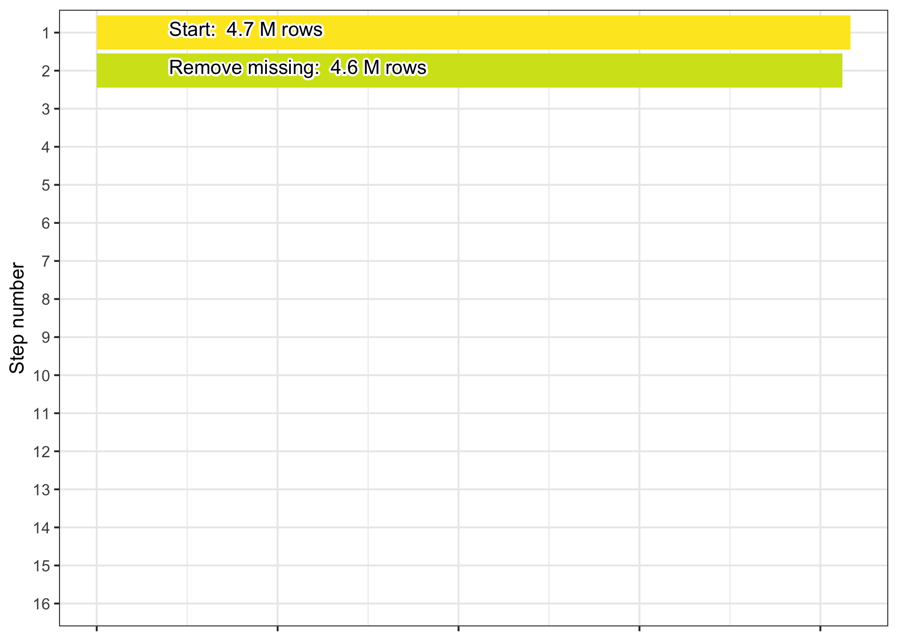
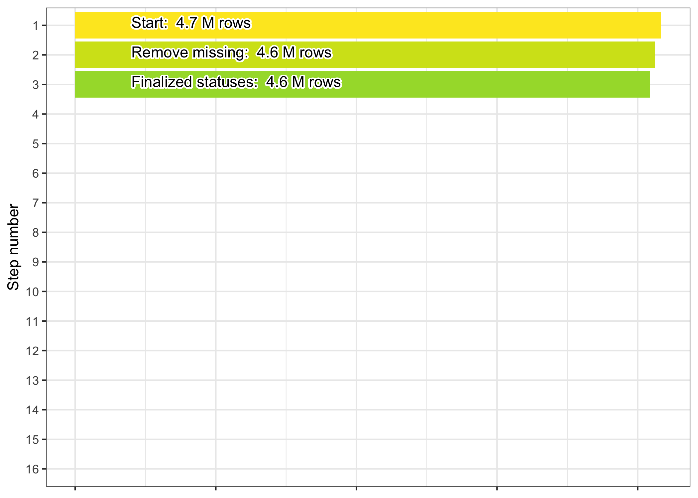
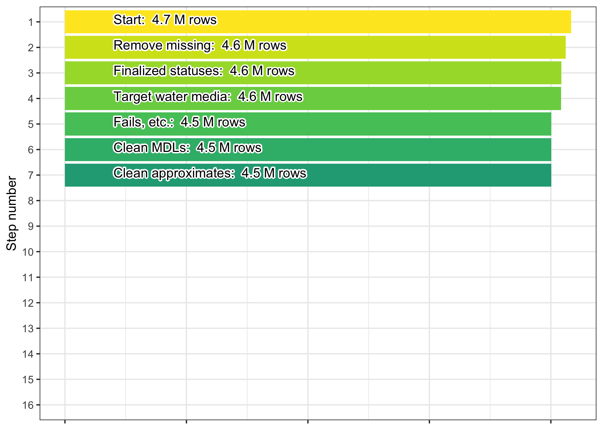
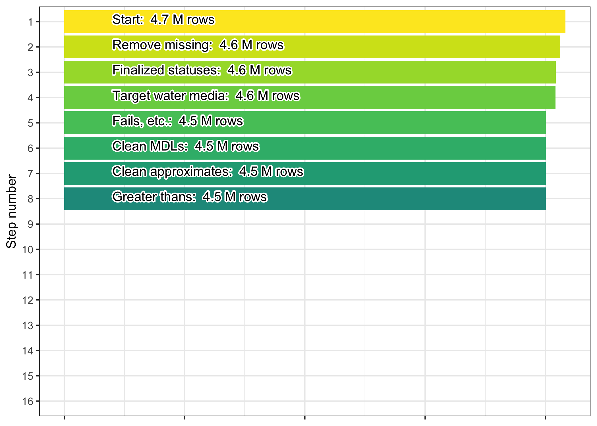
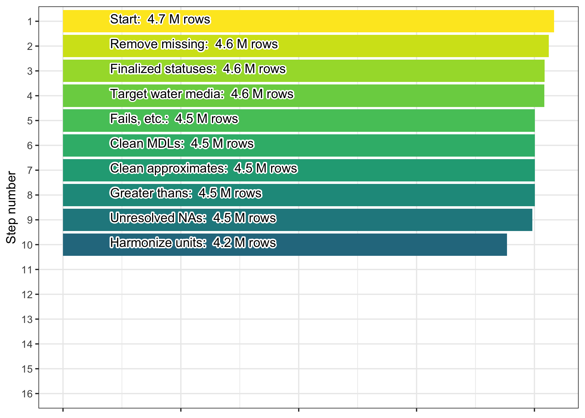
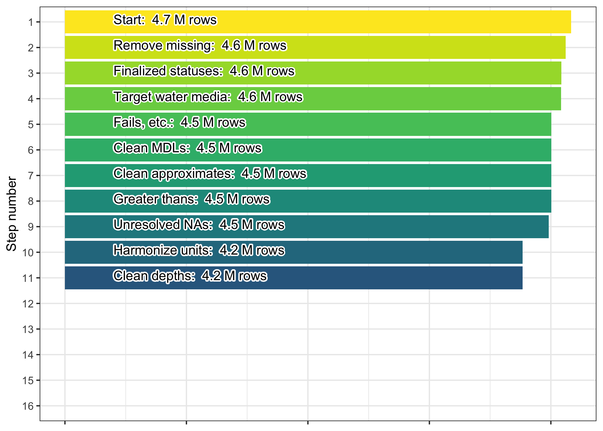
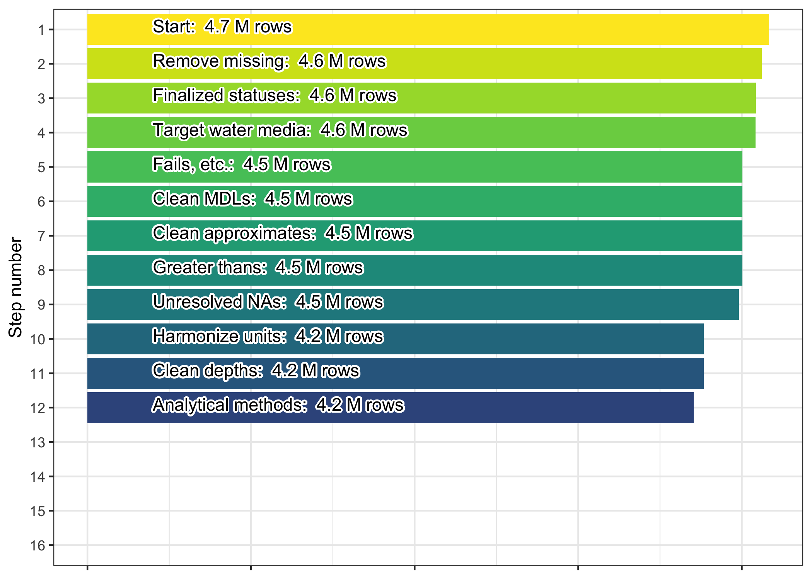
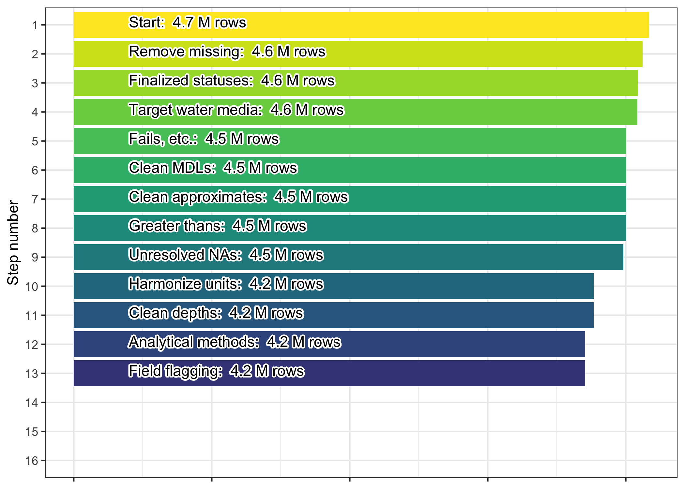
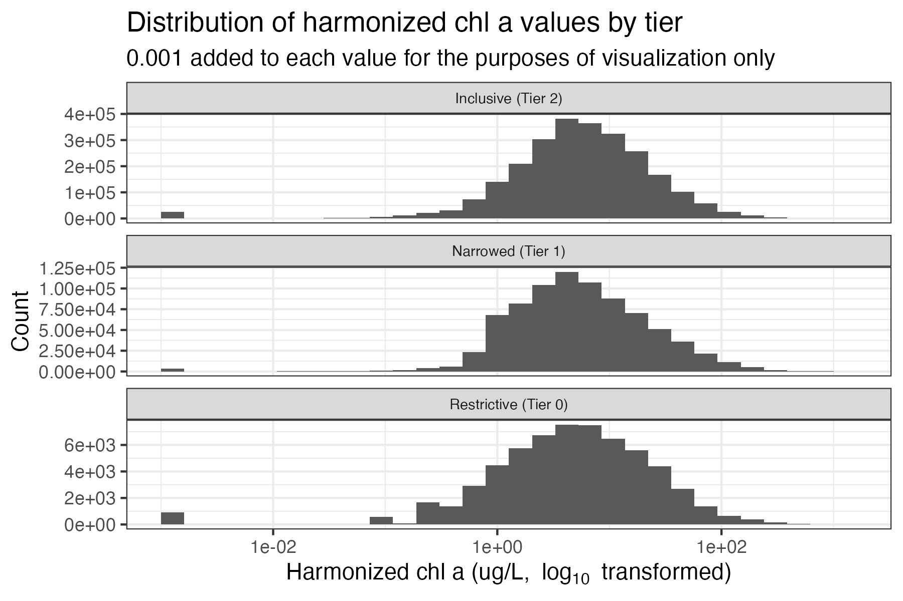
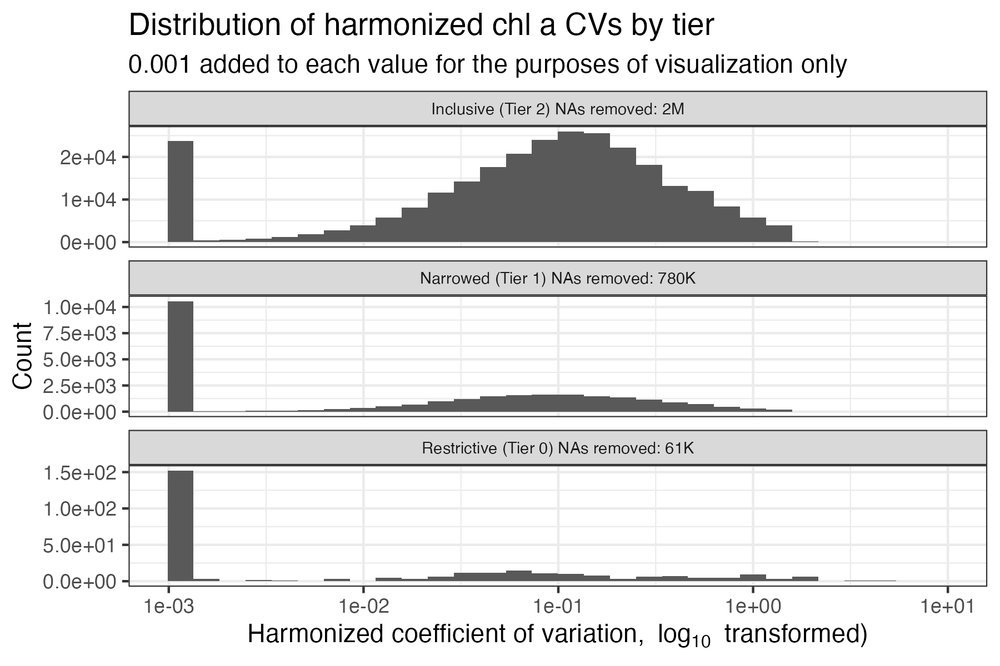

5 Chlorophyll a (chla) harmonization process
Following the completion of the {dataRetrieval} download process described previously, the pipeline contains raw WQP data for each parameter of interest. Before we harmonize each parameter we run through a series of universal “pre-harmonization” steps, which ensure that the datasets are appropriately formatted when entering their harmonization routines.
The text below first walks through the pre-harmonization steps for the raw chlorophyll a dataset and then delves into the specifics of the harmonization process.
5.1 Pre-harmonization of the raw chlorophyll WQP dataset
At the start of the pre-harmonization process the raw chlorophyll WQP dataset contains 4.61 million rows.
5.1.1 Missing results
Next, records that have missing data are dropped from the dataset. Several criteria are used when checking for missing data. If any of the below criteria are met the row is flagged as missing:
- Both the result column and detection limit column had
NAdata - Result, result unit, activity comment, laboratory comment, and
result comment columns are all
NA - The result comment column contains any user-provided text indicating
a missing value, currently including:
analysis lost,not analyzed,not recorded,not collected, orno measurement taken
50.07 thousand rows are dropped, resulting in a final count of 4.56 million.

5.1.2 Filter status
The final step in pre-harmonization is to filter the
ResultStatusIdentifier column to include only the following statuses:
"Accepted""Final""Historical""Validated""Preliminary"NA
These statuses generally indicate a reliable result having been reached,
however we also include NA in an effort to be conservative. More
specifically, when making decisions for this and other columns we
occasionally retain NA values if removing the records would otherwise
drop 10% or more of the available data.
This step removes 77.03 thousand rows of data, leaving it with 4.48 million rows remaining.

5.2 Harmonization-ready chlorophyll dataset
Once ready for harmonization, the chlorophyll a-only WQP dataset
contains the following user-defined characteristicNames: Chlorophyll
a, Chlorophyll a (probe relative fluorescence), Chlorophyll a, corrected
for pheophytin, Chlorophyll a (probe), Chlorophyll a, free of
pheophytin, Chlorophyll a, uncorrected for pheophytin, Chlorophyll a -
Phytoplankton (suspended).
These names are chosen in order to select for only those measurements that pertain to chlorophyll a.
5.2.1 Filter for water media
We next ensure that the media type for all chlorophyll data is
"Surface Water", "Water", "Estuary", or NA. 2880 rows are
removed. The final row count after this is 4.48 million.
5.2.2 Document and remove fails
In this step we filter out records based on indications that they have failed data quality assurance or quality control for some reason given by the data provider (these instances are referred to here as “failures”).
After reviewing the contents of the ActivityCommentText,
ResultLaboratoryCommentText, ResultCommentText, and
ResultMeasureValue_original columns, we developed a list of terms that
captured the majority of instances where records had failures or
unacceptable measurements. We found the phrasing to be consistent across
columns and so we searched for the same (case agnostic) terms in all
four locations. The terms are: “beyond accept”, “cancelled”,
“contaminat”, “error”, “fail”, “improper”, “instrument down”,
“interference”, “invalid”, “no result”, “no test”, “not accept”,
“outside of accept”, “problem”, “QC EXCEEDED”, “questionable”,
“suspect”, “unable”, “violation”, “reject”, “no data”.
Below are pie charts that break down the number of failure detections by column. Note that the plotting below is automated so if one or more of the columns listed above are not plotted, this indicates that the column(s) did not return any matches for the failure phrases. Also note that a single record can contain multiple failure phrases; therefore, failure phrases are not mutually exclusive.

5.2.3 Clean MDLs
In this step method detection limits (MDLs) are used to clean up the
reported values. When a numeric value is missing for the data record
(i.e., NA or text that became NA during an as.numeric call) we
check for non-detect language in the ResultLaboratoryCommentText,
ResultCommentText, ResultDetectionConditionText, and
ResultMeasureValue columns. This language can be "non-detect",
"not detect", "non detect", "undetect", or "below".
If non-detect language exists then we use the
DetectionQuantitationLimitMeasure.MeasureValue column for the MDL,
otherwise if there is a < and a number in the ResultMeasureValue
column we use that number instead.
We then use a random number between 0 and 0.5 * MDL as the record’s
value moving forward.
We produce a new column, mdl_flag, from the MDL cleaning process.
Records where no MDL-based adjustment was made and which are at or above
the MDL are assigned a 0. Records with corrected values based on the MDL
method are assigned a 1. Finally, records where no MDL-based adjustment
was made and which contain a numeric value below the provided MDL are
assigned a 2.
Most of this step should not result in a change in rows, but we do drop records with negative measurement values. This results in 0 rows being removed. The final row count after this is 4.39 million.
5.2.4 Clean approximate values
Cleaning approximate values involves a similar process as for MDL
cleaning. We flag “approximated” values in the dataset. The
ResultMeasureValue column gets checked for all three of the
following conditions:
- Numeric-only version of the column is still
NAafter MDL cleaning - The original column text contained a number
- Any of
ResultLaboratoryCommentText,ResultCommentText, orResultDetectionConditionTextmatch this regular expression, ignoring case:"result approx|RESULT IS APPROX|value approx"
We then use the approximate value as the record’s value moving forward.
Records with corrected values based on the above method are noted with a
1 in the approx_flag column.
This should not result in a change in rows but we still check: 0 rows are removed. The final row count after this is 4.39 million.

5.2.5 Clean values with “greater than” data
The next step is similar to the MDL and approximate value cleaning
processes, and follows the approximate cleaning process most closely.
The goal is to clean up values that were entered as “greater than” some
value. The ResultMeasureValue column gets checked for all three of
the following conditions:
- Numeric-only version of the column is still
NAafter MDL & approximate cleaning - The original column text contained a number
- The original column text contained a
>
We then use the “greater than” value (without >) as the record’s value
moving forward.
Records with corrected values based on the above method are noted with a
1 in the greater_flag column.
This should not result in a change in rows but we still check: 0 rows are removed. The final row count after this is 4.39 million.

5.2.6 Drop unresolved NA measurements
The goal of the preceding three steps was to prevent records with
seemingly missing measurement data from being dropped if there was still
a chance of recovering a usable value. At this point we’ve finished with
that process and we proceed to check for remaining records with NA
values in their harmonized_value column. If they exist, they are
dropped. We also filter out any negative values in the dataset at this
point.
2.2795^{4} rows are removed. The final row count after this is 4.37 million.
5.2.7 Harmonize record units
The next step in chla harmonization is converting the units of WQP records. We create the following conversion table, which is used to translate units provided in WQP into micrograms per liter (ug/L):
| ResultMeasure.MeasureUnitCode | conversion |
|---|---|
| mg/l | 1e+03 |
| mg/L | 1e+03 |
| ppm | 1e+03 |
| ug/l | 1e+00 |
| ug/L | 1e+00 |
| mg/m3 | 1e+00 |
| ppb | 1e+00 |
| mg/cm3 | 1e+06 |
| ug/ml | 1e+03 |
| mg/ml | 1e+06 |
| ppt | 1e+06 |
| ug/mL | 1e+03 |
| mg/mL | 1e+06 |
Below is a pie chart that breaks down the different unit codes that were dropped in the unit harmonization process, and how many records were lost with each code.
Additionally we provide a set of histograms of harmonized measurements
by CharacteristicName:
211.8 thousand rows are removed. The final row count after this is 4.16 million.

5.2.8 Clean depth data
The next harmonization step cleans the four depth-related columns obtained from the WQP. The details behind this step are covered in the Depth flags section of the Tiering, flagging, and quality control philosophy chapter.
This should not result in a change in rows but we still check: 0 rows are removed. The final row count after this is 4.16 million.

5.2.9 Filter and tier methods
We next review the analytical methods used in measuring chlorophyll a,
primarily by classifying the text provided with each record in
ResultAnalyticalMethod.MethodName. Once these methods are classified
we arrange them into hierarchical tiers as described in the Method
tiering section of the Tiering, flagging, and quality control
philosophy chapter.
However, prior to classification we check the
ResultAnalyticalMethod.MethodName column for names that indicate
non-chlorophyll a measurements. Phrases used to flag and remove
unrelated methods from chlorophyll a data are: “sulfate”, “sediment”,
“5310”, “counting”, “plasma”, “turbidity”, “coliform”, “carbon”, “2540”,
“conductance”, “nitrate”, “nitrite”, “nitrogen”, “alkalin”,
“zooplankton”, “phosphorus”, “periphyton”, “peri”, “biomass”,
“temperature”, “elemental analyzer”, “2320”.
This process drops 66.9 thousand rows leaving 4.09 million remaining.
The next step towards creating tiers is to then classify the methods in
ResultAnalyticalMethod.MethodName into either: HPLC methods,
spectrophotometer and fluorometer methods, or methods for which a
pheophytin correction is recorded as part of the methodology. These
classifications are not the final tiers, but they inform the tiering in
the final step of this process. The criteria for each of the above
classifications are:
- HPLC: Detection of “447”, “chromatography”, or “hplc” in the
ResultAnalyticalMethod.MethodNameor presence of 70951 or 70953 in theUSGSPCodecolumn - Spectro/fluoro: Detection of “445”, “fluor”, “Welshmeyer”, “fld”,
“10200”, “446”, “trichromatic”, “spectrophoto”, “monochrom”,
“monchrom”, or “spec” not as part of a word in
ResultAnalyticalMethod.MethodName - Pheophytin correction: Detection of “correct”, “445”, “446”, or
“in presence” in
ResultAnalyticalMethod.MethodNameor detection of “corrected for pheophytin” or “free of pheophytin” inCharacteristicName
Finally, we group the data into three tiers as described in Tiering, flagging, and quality control philosophy. These tiers are:
| Tier | Name | Description | Chl a details | |
|---|---|---|---|---|
| 0 | Restrictive | Data that are verifiably self-similar across organizations and time-periods and can be considered highly reliable and interoperable | Includes records using HPLC methods | |
| 1 | Narrowed | Data that we have good reason to believe are self-similar, but for which we can’t verify full interoperability across data providers | Spectrophotometer and fluorometer methods that are also pheophytin-corrected OR records where USGSPCode is 32209 |
|
| 2 | Inclusive | Data that are assumed to be reliable and are harmonized to our best ability given the information available from the data provider. This tier includes NA or non-resolvable descriptions for the analytical method, which often make up the majority of methods descriptions for any given parameter |
All other records by default, including NA methods and in situ probes |
Note: Spectrophotometer and fluorometer methods that are labeled as
pheophytin-corrected are grouped into the “Narrowed” tier. Depending on
the exact implementation of EPA method 445, the correction philosophy
may vary, and there is no agreed upon method to rectify inconsistencies
in data entry related to these methodological differences. The final
harmonization product that aggregates simultaneous records does not
retain the CharacteristicName or ResultAnalyticalMethod.MethodName
columns. However, the non-aggregated version of the harmonized dataset
(p3_chla_preagg_grouped) includes those columns. We encourage any
users that want to explicitly compare or account for pheophytin
correction to use the p3_chla_preagg_grouped dataset.
At this point we export a file
(3_harmonize/out/chla_tiering_record.csv) that contains a record of
how specific method text was tiered and how many row counts corresponded
to each method.

5.2.10 Flag based on field methods
Next we flag field sampling methods based primarily on the
SampleCollectionMethod.MethodName column. We first classify each
record into either in vitro or in situ methods (i.e., in vitro
assumes a water sample was collected and taken to a lab for analysis;
in situ assumes a measurement was obtained in the field).
We used the following strings to mark in vitro samples: “grab”, “bottle”, “vessel”, “bucket”, “jar”, “composite”, “integrate”, “UHL001”, “surface”, “filter”, “filtrat”, “1060B”, “kemmerer”, “collect”, “rosette”, “equal width”, “vertical”, “van dorn”, “bail”, “sample”, “sampling”, “lab” not in the middle of another word, or a “G” on its own as shorthand for “grab”. In situ samples were detected using “in situ”, “probe”, or “ctd”.
Lastly we created the field flag based on whether the sampling method used agrees with the analytical method. Flags of 0 indicated that the field sampling method is in agreement with the analytical method, 1 indicates that the field sampling methods are uncharacteristic of the analytical method, and anything with tier of 2 is given a field flag of 2 due to the ambiguity associated with those observations’ analytical methods and corresponding sampling methods.
The following rules are used for chlorophyll a field sampling flags:
- Flag 0: Restrictive and narrowed tiers with in vitro field methods
- Flag 1: Restrictive and narrowed tiers with in situ field methods
- Flag 2: Any entry in the inclusive tier
No records should be removed by this process and so there are 0 rows dropped leaving 4.09 million remaining in the harmonized chlorophyll a dataset.

5.2.11 Miscellaneous flag
Next we add a placeholder for the miscellaneous flag column,
misc_flag.
Some parameters will have additional flagging requirements that chlorophyll a does not, so we include this placeholder to maintain the same columns across all parameter data products.
No records should be removed by this process and so there are 0 rows dropped leaving 4.09 million remaining in the harmonized chlorophyll a dataset.
5.2.12 Remove unrealistic values
Before finalizing the dataset we remove chlorophyll a values that are beyond a realistic threshold. We use 1000 ug/L as our cutoff for removal (Wetzel, 2001, Chapter 15, Figure 19).
7659 rows are removed. The final row count after this is 4.08 million.
5.2.13 Aggregate simultaneous records
The final step of chlorophyll a harmonization is to aggregate
simultaneous observations. Any group of samples determined to be
simultaneous are simplified into a single record containing the mean and
coefficient of variation (CV) of the group. These can be either true
duplicate entries in the WQP or records with non-identical values
recorded at the same time and place and by the same organization (field
and/or lab replicates/duplicates). The CV can be used to filter the
dataset based on the amount of variability that is tolerable to specific
use cases. Note, however, that many entries will have a CV that is NA
because there are no duplicates or 0 because the records are duplicates
and all entries have the same harmonized_value.
We identify simultaneous records to aggregate by creating identical
subgroups (subgroup_id) from the following columns: parameter,
OrganizationIdentifier, MonitoringLocationIdentifier,
MonitoringLocationTypeName, ResolvedMonitoringLocationTypeName,
ActivityStartDate, ActivityStartDateTime,
ActivityStartTime.TimeZoneCode, harmonized_tz, harmonized_utc,
harmonized_top_depth_value, harmonized_top_depth_unit,
harmonized_bottom_depth_value, harmonized_bottom_depth_unit,
harmonized_discrete_depth_value, harmonized_discrete_depth_unit,
depth_flag, mdl_flag, approx_flag, greater_flag, tier,
field_flag, misc_flag, harmonized_units. This selection limits the
columns included in the final dataset, but we also provide a copy of the
AquaMatch dataset prior to its aggregation (pipeline target
p3_chla_preagg_grouped), and including the subgroup_id column, so
that users can use the non-aggregated data as well and match make joins
between dataset versions.
The final, aggregated values are presented in the harmonized_value and
harmonized_value_cv columns. The number of rows used per group is
recorded in the harmonized_row_count column.
0 rows dropped leaving 4.09 million remaining in the final harmonized and aggregated chlorophyll a dataset.
5.2.14 Harmonized chlorophyll a
At this point the harmonization of the chlorophyll a data from the WQP is complete and we export the final dataset for use later in the workflow.
Below is a final set of histograms showing the distribution of
harmonized measurements (top) and CVs (bottom) broken down by tier
after aggregating simultaneous records.

